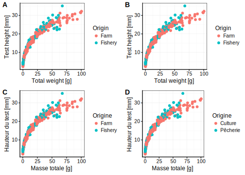

5.1 Importation des données
Il est possible d’encoder des très petits jeux de données dans R. La fonction tribble() permet de le faire facilement. Notez que les noms des colonnes du tableau sont à rentrer sous forme de formules (~var), que chaque entrée est séparée par une virgule, et que les chaines de caractères sont entourées de guillemets. Les espaces sont optionnels et peuvent être utilisés pour aligner les données afin que le tout soit plus lisible. Des commentaires peuvent être utilisés éventuellement en fin de ligne (un dièse # suivi du commentaire).
small_dataset <- tribble(
~treatment, ~dose, ~response,
"control", 0.5, 18.35,
"control", 1.0, 26.43, # This value needs to be double-checked
"control", 2.0, 51.08,
"test" , 0.5, 10.29,
"test" , 1.0, 19.92,
"test" , 2.0, 41.06)
# Print the table
small_dataset# # A tibble: 6 x 3
# treatment dose response
# <chr> <dbl> <dbl>
# 1 control 0.5 18.4
# 2 control 1 26.4
# 3 control 2 51.1
# 4 test 0.5 10.3
# 5 test 1 19.9
# 6 test 2 41.1Dans la plupart des cas, vous utiliserez ou collecterez des données stockées dans des formats divers : feuilles Excel, fichiers CSV (“comma-separated-values”, un format standard d’encodage d’un tableau de données sous forme textuelle), formats spécifiques à divers logiciels statistiques comme SAS, Stata ou Systat, … Ces données peuvent être sur un disque local ou disponibles depuis un lien URL sur le net17. De nombreuses fonctions existent dans R pour importer toutes ces données. La fonction read() du package data.io est l’une des plus simples et conviviales d’entre-elles. Vous l’avez déjà utilisée, mais reprenons un exemple pour en discuter les détails.
(biometry <- read("biometry", package = "BioDataScience", lang = "fr"))# # A tibble: 395 x 7
# gender day_birth weight height wrist year_measure age
# <fct> <date> <dbl> <dbl> <dbl> <dbl> <dbl>
# 1 M 1995-03-11 69 182 15 2013 18
# 2 M 1998-04-03 74 190 16 2013 15
# 3 M 1967-04-04 83 185 17.5 2013 46
# 4 M 1994-02-10 60 175 15 2013 19
# 5 W 1990-12-02 48 167 14 2013 23
# 6 W 1994-07-15 52 179 14 2013 19
# 7 W 1971-03-03 72 167 15.5 2013 42
# 8 W 1997-06-24 74 180 16 2013 16
# 9 M 1972-10-26 110 189 19 2013 41
# 10 M 1945-03-15 82 160 18 2013 68
# # ... with 385 more rowsLe jeu de données biometry est disponible dans le package R BioDataScience. Dans ce cas, il ne faut pas spécifier de chemin d’accès au fichier : R sait où le trouver tout seul. Il est également spécifié ici que la langue souhaitée est le français avec l’argument lang = "fr". Le résultat de l’importation est assigné à la variable biometry(mais elle pourrait tout aussi bien porter un autre nom). Pour finir, le tout est entouré, de manière optionnelle, de parenthèses afin de forcer l’impression du résultat.
Visualisez toujours votre tableau de données juste après l’importation. Vérifiez que les différentes colonnes ont été importées au bon format. En particulier,
-
Les données numériques sont-elle bien comprises par R comme des nombres (
<dbl>ou<int>) ? -
Les variables qualitatives ou semi-quantitatives sont importées comme chaines de caractères (
<chr>) et doivent éventuellement être converties en variables de type facteur à l’aide deas.factor()ou facteur ordonné avecas.ordered(), voir plus loin.
L’impression du tableau de données est une façon de voir cela, mais il y en a bien d’autres : essayez View(biometry), str(biometry), ou cliquez sur la petite icône bleue avec une flèche devant biometry dans l’onglet Environnement.
Avant d’importer vos données dans R, vous devez vous poser les deux questions suivantes :
- Où ces données sont stockées ?
Vous venez d’importer des données depuis un package R. Vous pouvez également les lire depuis un fichier sur le disque ou via une URL depuis le Web. Tous ces cas sont gérés par read() qui unifie donc de manière simple vos accès aux données.
- Quels est le format de vos données ?
Souvent ce format est renseigné par l’extension du fichier. Par exemple .xlsx pour un Microsoft Excel ou .csv pour du “comma-separated-value”. Attention ! L’extension du fichier est cachée sous Windows, et parfois sous MacOS. Visualisez vos fichiers dans l’onglet Files dans RStudio pour voir leurs noms complets, avec les extensions. Pour l’instant, read() supporte 32 formats de fichiers différents, mais cette liste est amenée à s’agrandir à l’avenir. Pour découvrir les formats supportés, et les fonctions d’importation spécifiques appelées à chaque fois, utilisez :
getOption("read_write")# # A tibble: 32 x 5
# type read_fun read_header write_fun comment
# <chr> <chr> <chr> <chr> <chr>
# 1 csv readr::read_… data.io::hrea… readr::write_… comma separated valu…
# 2 csv2 readr::read_… data.io::hrea… <NA> semicolon separated …
# 3 xlcsv readr::read_… data.io::hrea… readr::write_… write a CSV file mor…
# 4 tsv readr::read_… data.io::hrea… readr::write_… tab separated values
# 5 fwf readr::read_… data.io::hrea… <NA> fixed width file
# 6 log readr::read_… <NA> <NA> standard log file
# 7 rds readr::read_… <NA> readr::write_… R data file (no comp…
# 8 txt readr::read_… <NA> readr::write_… text file (as length…
# 9 raw readr::read_… <NA> <NA> binary file (read as…
# 10 ssv readr::read_… data.io::hrea… <NA> space separated valu…
# # ... with 22 more rowsPar la suite, vous allez apprendre à importer vos données depuis différentes sources.
5.1.1 Données sur le disque
Lorsque l’extension du fichier reflète le format des données, il vous suffit juste d’indiquer le chemin d’accès au fichier à read(). La plupart du temps, cela suffira pour importer correctement les données.
N’oubliez pas que le chemin d’accès à votre fichier peut s’écrire de manière absolue ou bien de manière relative. Vous devez autant que possible employer des chemins relatifs pour que votre projet soit portable. Si vous avez du mal à déterminer le chemin relatif par rapport à vos données, le snippet filerelchoose vous sera très utile :
-
Assurez-vous que le chemin actif dans la fenêtre Console est le même que le répertoire contenant le fichier édité. Pour cela, utilisez l’entrée de menu RStudio
Session -> Set Working Directory -> To Source File Location. -
Utilisez le snippet
filerelchooseque vous activez dans une zone de code R (dans un script R, ou à l’intérieur d’un chunk dans un document R Markdown/R Notebook). Entrezfile, attendez que le menu contextuel de complétion apparaisse, sélectionnezfilerelchoosedans la liste et tapezEntrée. Une boite de dialogue de sélection de fichier apparaît. Sélectionnez le fichier qui vous intéresse et …fileest remplacé par le chemin relatif vers votre fichier dans l’éditeur.
Les explications détaillées concernant l’organisation de vos projets dans RStudio pour qu’ils soient portables, la gestion des chemins d’accès aux fichiers et les chemins relatifs sont détaillés dans l’annexe B, à la section B.1.1. C’est le moment de vérifier que vous avez bien compris et assimilé son contenu.
Pièges et astuces
Si l’extension est incorrecte, vous pouvez forcer un format de fichier particulier à l’importation en l’indiquant dans l’appel à
read()commeread$<ext>(). Par exemple, pour forcer l’importation d’un fichier de type “comma-separated-values” pour un fichier qui se nommeraitmy_data.txt, vous écrirezread$csv(my_data.txt).Si les données ne sont pas importées correctement, cela signifie que les arguments d’importation par défaut ne sont pas adaptés. Les arguments à spécifier sont différents d’un format à l’autre. Voyez d’abord la fonction appelée en interne par
read()dans le tableau obtenu viagetOption("read_write"). Par exemple, pour un fichierxlsx, il s’agit de la fonctionreadxl::read_excel()qui est utilisée. Ensuite, voyez l’aide de cette dernière fonction pour en découvrir les différents arguments (?readxl::read_excel). Là, vous pourrez découvrir les argumentssheet =qui indiquent la feuille à importer depuis le fichier (première feuille par défaut), ourange =qui indique la plage de données dans le feuille à utiliser (par défaut, depuis la cellule A1 en haut à gauche jusqu’à la fin du tableau). Donc, si votre fichiermy_data.xlsxcontient les feuillessheet1,sheet2etsheet3, et que les données qui vous intéressent sont dans la plageC5:E34desheet2, vous pourrez écrire:read("my_data.xlsx", sheet = "sheet2", range = "C5:E34").
5.1.2 Données depuis Internet
Il existe différents logiciels qui permettent d’éditer des tableaux de données en ligne et de les partager sur le Net. Google Sheets est l’un d’entre eux, tout comme Excel Online. Des stockages spécifiques pour les données scientifiques existent aussi comme Figshare ou Zenodo. Ces sites permettent de partager facilement des jeux de données sur le Net.
La science est de plus en plus ouverte, et les pratiques d’Open Data de plus en plus fréquentes et même imposées par des programmes de recherche comme les programmes européens ou le FNRS en Belgique. Vous serez donc certainement amenés à accéder à des données depuis des dépôts spécialisés sur Internet.
Concentrez-vous sur les outils spécifiques à la gestion de ce type de données. il s’agit, en effet, d’une compétence clé qu’un bon scientifique des données se doit de maîtriser parfaitement. En recherchant à chaque fois la meilleure façon d’accéder à des données sur le Net, vous développerez cette compétence progressivement par la pratique… et vous pourrez faire valoir un atout encore rare mais apprécié lors d’un entretien d’embaûche plus tard.
Voici un exemple de feuille de données Google Sheets : https://docs.google.com/spreadsheets/d/1iEuGrMk4IcCkq7gMNzy04DkSaPeWH35Psb0E56KEQMw. Il est possible d’importer ce genre de données directement depuis R, mais il faut d’abord déterminer l’URL à utiliser pour obtenir les données dans un format reconnu. Dans le cas de Google Sheets, il suffit d’indiquer à la fin de cette URL que l’on souhaite exporter les données au format CSV en rajoutant /export?format=csv à la fin de l’URL.
Cette URL est très longue. Elle est peu pratique et par ailleurs, elle a toujours la même structure : "https://docs.google.com/spreadsheets/d/{id}/export?format=csv" avec {id} qui est l’identifiant unique de la feuille Google Sheets (ici 1iEuGrMk4IcCkq7gMNzy04DkSaPeWH35Psb0E56KEQMw). Vous pouvez indiquer explicitement ceci dans votre code et profiter des capacités de remplacement de texte dans des chaînes de caractères de la fonction glue::glue() pour effectuer un travail impeccable.
googlesheets_as_csv <- "https://docs.google.com/spreadsheets/d/{id}/export?format=csv"
coral_id <- "1iEuGrMk4IcCkq7gMNzy04DkSaPeWH35Psb0E56KEQMw"
(coral_url <- glue::glue(googlesheets_as_csv, id = coral_id))# https://docs.google.com/spreadsheets/d/1iEuGrMk4IcCkq7gMNzy04DkSaPeWH35Psb0E56KEQMw/export?format=csvVous n’aurez alors plus qu’à lire les données depuis cette URL. N’oubliez pas non plus de spécifier à read() que les données sont à lire au format CSV en utilisant read$csv() :
(coral <- read$csv(coral_url))# Parsed with column specification:
# cols(
# localisation = col_character(),
# species = col_character(),
# id = col_double(),
# salinity = col_double(),
# temperature = col_double(),
# date = col_datetime(format = ""),
# time = col_double(),
# gain = col_double(),
# gain_std = col_double()
# )# # A tibble: 98 x 9
# localisation species id salinity temperature date
# <chr> <chr> <dbl> <dbl> <dbl> <dttm>
# 1 A0 s.hyst… 1 34.7 24.5 2018-04-24 09:10:00
# 2 A0 s.hyst… 2 34.7 24.5 2018-04-24 09:10:00
# 3 A0 s.hyst… 3 34.7 24.5 2018-04-24 09:10:00
# 4 A0 s.hyst… 4 34.7 24.5 2018-04-24 09:10:00
# 5 A0 s.hyst… 5 34.7 24.5 2018-04-24 09:10:00
# 6 A0 s.hyst… 6 34.7 24.5 2018-04-24 09:10:00
# 7 A0 s.hyst… 7 34.7 24.5 2018-04-24 09:10:00
# 8 A0 s.hyst… 8 34.7 24.5 2018-04-24 09:10:00
# 9 A0 s.hyst… 9 34.7 24.5 2018-04-24 09:10:00
# 10 A0 s.hyst… 10 34.7 24.5 2018-04-24 09:10:00
# # ... with 88 more rows, and 3 more variables: time <dbl>, gain <dbl>,
# # gain_std <dbl>Lorsque vous travaillez sur des données issues d’une source externe, et donc susceptibles d’être modifiées ou même pire, de disparaître. Il est préférable d’enregistrer une copie locale de ces données dans votre projet (dans le sous-dossier data de préférence). Si vous travaillez exclusivement avec R, l’un des meilleurs formats est RDS, un format natif qui conservera toutes les caractéristiques de votre objet, y compris sa classe, et d’éventuels attributs18. Par défaut, les données seront stockées non compressées, mais vous pourrez aussi décider de compresser avec les algorithmes "gz" (plus rapide et répandu), "bz2" (intermédiaire), ou "xz" (le plus efficace en taux de compression mais aussi le plus lent et gourmand en ressources CPU). Par exemple, pour enregistrer les données avec compression "gz", vous écrirez :
write$rds(coral, file = "../data/coral.rds", compress = "gz")Ensuite, vous pourrez simplement charger ces données plus loin depuis la version locale dans votre R Markdown comme ceci :
coral <- read("../data/coral.rds")Attention, ne supprimez jamais l’instruction permettant de retrouver vos données sur Internet sous prétexte que vous avez maintenant une copie locale à disposition. C’est le lien, le fil conducteur vers les données originales. Vous pouvez soit mettre l’instruction en commentaire en ajoutant un dièse devant, soit soustraire le chunk de l’évaluation en indiquant eval=FALSE dans son entête. Faites-en de même avec l’instruction write(). Ainsi, le traitement de vos données commencera à l’instruction read() et vous partirez de la copie locale. Si jamais vous voulez effectuer une mise à jour depuis la source initiale, il sera toujours possible de dé-commenter les instructions, ou de passer le chunk à eval=TRUE temporairement (ou encore plus simplement, forcez l’exécution du chunk dans l’éditeur en cliquant sur la petite flèche verte en haut à gauche du chunk).
Pièges et astuces
Comme il s’agit seulement d’une copie des données originelles, vous pouvez choisir de ne pas inclure le fichier
.rdsdans le système de gestion de version de Git. C’est très simple : il suffit d’ajouter une entrée.rdsdans le fichier.gitignoreà la racine de votre dépôt, et tous les fichiers avec cette extension seront ignorés. Notez toutefois que, si vous partagez votre projet sur GitHub, les données locales n’y apparaitront pas non plus. D’une part, cela décharge le système de gestion de version, et d’autre part, les gros fichiers de données n’ont pas vraiment leur place sur GitHub. Cependant, soyez conscient de ce que quelqu’un qui réalise un clone ou un fork de votre dépôt devra d’abord réimporter lui aussi localement les données avant de pouvoir travailler, ce qui implique de bien comprendre le mécanisme que vous avez mis en place. Documentez-le correctement, avec une note explicite dans le fichierREADME.md, par exemple.- Les données originales ne sont peut-être pas présentées de la façon qui vous convient. Cela peut nécessiter un travail important de préparation du tableau de données. Au fur et à mesure que le ou les chunks d’importation/préparation des données augmentent en taille, ils deviennent de plus en plus gênants dans un document consacré à l’analyse de ces données. Si c’est le cas, vous avez deux options possibles :
- Séparer votre R Markdown en deux. Un premier document dédié à l’importation/préparation des données et un second qui se concentre sur l’analyse. Une bonne pratique consiste à numéroter les fichiers en tête pour qu’ils apparaissent par ordre logique lorsqu’ils sont listés par ordre alphabétique (
01_import.Rmd,02_analysis.Rmd). Effectuer le travail d’importation/préparation du tableau de données dans un script R. Dans le R Markdown, vous pouvez ajouter l’instruction (commentée ou placée dans un chunk
eval=FALSE) pour “sourcer” ce script R afin de réimporter/retraiter vos données :#source("../R/data-import.R")Si le travail de préparation des données est lourd (et donc, prend beaucoup de temps) il peut être avantageux d’enregistrer localement la version nettoyée de vos données plutôt que la version originale. Mais alors indiquez-le explicitement.
- Séparer votre R Markdown en deux. Un premier document dédié à l’importation/préparation des données et un second qui se concentre sur l’analyse. Une bonne pratique consiste à numéroter les fichiers en tête pour qu’ils apparaissent par ordre logique lorsqu’ils sont listés par ordre alphabétique (
Faites toujours la distinction entre données brutes et données nettoyées. Ne les mélangez jamais et documentez toujours de manière reproductible le processus qui mène des unes aux autres ! C’est tout aussi important que de garder un lien vers la source originale des données dans votre code et d’utiliser toujours des chemins relatifs vers vos fichiers pour une analyse portable et reproductible.
5.1.3 Données depuis un package
Les packages R comme data.io, chart ou encore flow, fournissent une série de fonctions supplémentaires. Certains d’entre eux proposent également des jeux de données. Ici aussi, read() permet de les récupérer, même si c’est la fonction data() qui est souvent utilisée à cet effet dans R. Comparons read() et data() dans le cas des données issues de packages R. Avec data(), vous n’assignez pas le jeu de données à un nom. Ce nom vous est imposé comme le nom initial du jeu de données :
data("urchin_bio", package = "data.io") # package = optionnel si déjà chargéLe jeu de données urchin_bio n’est pas véritablement chargé dans l’environnement utilisateur avec data(). Seulement une “promesse” de chargement (Promise) est enregistrée. Voyez dans l’onglet Environnement ce qui apparaît. Ce n’est qu’à la première utilisation du jeu de données que le tableau est véritablement chargé. Par exemple :
head(urchin_bio)# origin diameter1 diameter2 height buoyant_weight weight solid_parts
# 1 Fishery 9.9 10.2 5.0 NA 0.5215 0.4777
# 2 Fishery 10.5 10.6 5.7 NA 0.6418 0.5891
# 3 Fishery 10.8 10.8 5.2 NA 0.7336 0.6770
# 4 Fishery 9.6 9.3 4.6 NA 0.3697 0.3438
# 5 Fishery 10.4 10.7 4.8 NA 0.6097 0.5587
# 6 Fishery 10.5 11.1 5.0 NA 0.6096 0.5509
# integuments dry_integuments digestive_tract dry_digestive_tract gonads
# 1 0.3658 NA 0.0525 0.0079 0
# 2 0.4447 NA 0.0482 0.0090 0
# 3 0.5326 NA 0.0758 0.0134 0
# 4 0.2661 NA 0.0442 0.0064 0
# 5 0.4058 NA 0.0743 0.0117 0
# 6 0.4269 NA 0.0492 0.0097 0
# dry_gonads skeleton lantern test spines maturity sex
# 1 0 0.1793 0.0211 0.0587 0.0995 0 <NA>
# 2 0 0.1880 0.0205 0.0622 0.1053 0 <NA>
# 3 0 0.2354 0.0254 0.0836 0.1263 0 <NA>
# 4 0 0.0630 0.0167 0.0180 0.0283 0 <NA>
# 5 0 NA NA NA NA 0 <NA>
# 6 0 NA NA NA NA 0 <NA>Regardez à nouveau dans l’onglet Environnement. Ce coup-ci urchin_bio apparaît bien dans la section Data et l’icône en forme de petit tableau à la droite qui permet de le visualiser est enfin accessible.
La fonction read() permet de choisir librement le nom que nous souhaitons donner à notre jeu de données. Si nous voulons l’appeler urchin au lieu de urchin_bio, pas de problèmes. De plus, il est directement chargé et accessible dans l’onglet Environnement (en effet, si on utilise une instruction qui charge un jeu de données, c’est très vraissemblablement parce que l’on souhaite ensuite le manipuler depuis R, non ?).
urchin <- read("urchin_bio", package = "data.io")Nous avons déjà vu que read() donne accès également dans certains cas à des métadonnées (par exemple le label et les unités des jeux de données) dans différentes langues, ce que ne permet pas data(). Enfin, la syntaxe et la fonction utilisée sont pratiquement identiques pour charger des données depuis un fichier, depuis Internet ou depuis un package avec read(). C’est logique et facile à retenir. data() ne permet que de récupérer des données liées à un package R, et c’est tout ! Pour toutes ces raisons, nous préférons utiliser ici read() à data().
5.1.3.1 Langue du jeu de données
La fonction read() est également capable de lire un fichier annexe permettant de rajouter des métadonnées (données complémentaires) à notre tableau, comme les labels et les unités des variables en différentes langues. Lorsque l’on importe le jeu de données avec la fonction data(), ces métadonnées ne sont pas employées.
data("urchin_bio", package = "data.io")
# Visualisation des données
chart(urchin_bio, height ~ weight %col=% origin) +
geom_point()
Comparez ceci avec le même graphique, mais obtenu à partir de différentes versions du jeu de données urchin_bio importé à l’aide de read() avec des valeurs différentes pour l’argument lang =.
urchin <- read("urchin_bio", package = "data.io")
urchin_en <- read("urchin_bio", package = "data.io", lang = "en")
urchin_fr <- read("urchin_bio", package = "data.io", lang = "fr")
urchin_FR <- read("urchin_bio", package = "data.io", lang = "FR")Les différences dans les labels sont observables sur le graphique ci-dessous.
a <- chart(urchin, height ~ weight %col=% origin) +
geom_point()
b <- chart(urchin_en, height ~ weight %col=% origin) +
geom_point()
c <- chart(urchin_fr, height ~ weight %col=% origin) +
geom_point()
d <- chart(urchin_FR, height ~ weight %col=% origin) +
geom_point()
combine_charts(list(a, b, c, d))
- A & B : l’argument
lang =par défaut estlang = "en". Il utilise les labels et unités en anglais avec les unités dans le système international. - C : l’argument
lang = "fr"utilise les labels et unités en français. Il laisse cependant les niveaux des variables facteurs en anglais (FarmetFishery) afin d’éviter de devoir changer les instructions de manipulation des données qui feraient référence à ces niveaux. - D : l’argument
lang = "FR"ajoute les labels et unités en français. De plus, il traduit également les niveaux des variables facteurs (CultureetPêcherie).
Il vous est conseillé d’employé l’argument lang = "fr" lors de vos différents travaux. La langue internationale en science est l’anglais et vous serez très certainement amené dans votre carrière scientifique à produire des documents en français et en anglais. L’utilisation de lang = "fr"rend le même code réutilisable sur la version française ou anglaise, contrairement à lang = "FR". Observez les exemples ci-dessous.
urchin_en %>.%
filter(., origin == "Farm") %>.%
head(.)# # A tibble: 6 x 19
# origin diameter1 diameter2 height buoyant_weight weight solid_parts
# <fct> <dbl> <dbl> <dbl> <dbl> <dbl> <dbl>
# 1 Farm 53.1 54.5 26.3 9.57 60.2 41.7
# 2 Farm 52.7 52.7 25.9 10.8 63.2 46.6
# 3 Farm 54 54.2 24.5 10.7 64.4 44.3
# 4 Farm 51.1 51.3 28.8 11.2 62.4 45.0
# 5 Farm 52.1 53.6 31.2 11.1 63.7 44.0
# 6 Farm 52.3 51.4 28.6 12.4 68.6 53.9
# # ... with 12 more variables: integuments <dbl>, dry_integuments <dbl>,
# # digestive_tract <dbl>, dry_digestive_tract <dbl>, gonads <dbl>,
# # dry_gonads <dbl>, skeleton <dbl>, lantern <dbl>, test <dbl>,
# # spines <dbl>, maturity <int>, sex <fct>urchin_fr %>.%
filter(., origin == "Farm") %>.%
head(.)# # A tibble: 6 x 19
# origin diameter1 diameter2 height buoyant_weight weight solid_parts
# <fct> <dbl> <dbl> <dbl> <dbl> <dbl> <dbl>
# 1 Farm 53.1 54.5 26.3 9.57 60.2 41.7
# 2 Farm 52.7 52.7 25.9 10.8 63.2 46.6
# 3 Farm 54 54.2 24.5 10.7 64.4 44.3
# 4 Farm 51.1 51.3 28.8 11.2 62.4 45.0
# 5 Farm 52.1 53.6 31.2 11.1 63.7 44.0
# 6 Farm 52.3 51.4 28.6 12.4 68.6 53.9
# # ... with 12 more variables: integuments <dbl>, dry_integuments <dbl>,
# # digestive_tract <dbl>, dry_digestive_tract <dbl>, gonads <dbl>,
# # dry_gonads <dbl>, skeleton <dbl>, lantern <dbl>, test <dbl>,
# # spines <dbl>, maturity <int>, sex <fct>Pas d’adaptation nécessaire du code pour passer de urchin_en à urchin_fr.
urchin_FR %>.%
filter(., origin == "Pêcherie") %>.%
head(.)# # A tibble: 6 x 19
# origin diameter1 diameter2 height buoyant_weight weight solid_parts
# <fct> <dbl> <dbl> <dbl> <dbl> <dbl> <dbl>
# 1 Pêche… 9.9 10.2 5 NA 0.522 0.478
# 2 Pêche… 10.5 10.6 5.7 NA 0.642 0.589
# 3 Pêche… 10.8 10.8 5.2 NA 0.734 0.677
# 4 Pêche… 9.6 9.3 4.6 NA 0.370 0.344
# 5 Pêche… 10.4 10.7 4.8 NA 0.610 0.559
# 6 Pêche… 10.5 11.1 5 NA 0.610 0.551
# # ... with 12 more variables: integuments <dbl>, dry_integuments <dbl>,
# # digestive_tract <dbl>, dry_digestive_tract <dbl>, gonads <dbl>,
# # dry_gonads <dbl>, skeleton <dbl>, lantern <dbl>, test <dbl>,
# # spines <dbl>, maturity <int>, sex <fct>Le code a dû être modifier dans l’instruction filter() lors du passage à urchin_FR (Farm -> Pêcherie). Bien évidemment, pour un rapport plus formel en français, tout doit être traduit en français et l’option lang = "FR" accompagnée d’une vérification et une adaptation éventuelle du code est à préférer dans ce cas précis.
R permet également d’interroger des bases de données spécialisées, mais nous n’aborderons ce sujet spécifique qu’au cours de Science des Données Biologique 5 en Master 2.↩
Si vous devez aussi accéder à vos données à partir d’autres langages comme Python, Java ou C++, utilisez un format commun reconnu par les différents logiciels. Le CSV fonctionne généralement bien, mais des formats binaires plus performants sont également disponibles. Parmi ces formats “inter-langages”, gardez un œil sur Apache Arrow très prometteur et avec une version pour R qui sera disponible prochainement.↩